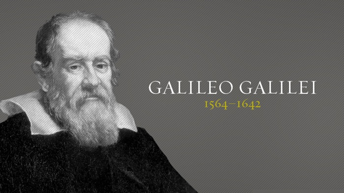
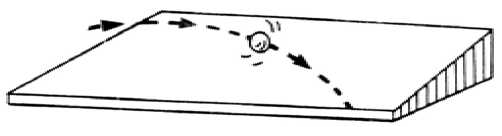

GALILEO
Vào một tối tháng Năm 1509, một chiếc xe ngựa vừa chạy vừa rung chuông qua các phố ở Padua thuộc đông bắc nước Ý. Trong xe là giáo sư toán học Galileo Galilei(1), ông trở về từ chuyến đi Venice. Trong khi ở Venice, ông nhận được thư của một gười học trò cũ tên là Jaques Badovere – chính thư này đã khiến ông vôi vã thở về nhà.

.Badovere lúc ấy đang sinh sống ở Paris (Pháp), trong thư gửi thầy Glileo, ông có viết:
- Một kiểu ống kỳ diệu đang được bán ở Paris. Ống này làm cho các vật ở xa dường như gần lại. Có thể nhìn rất rõ một người đứng cách xa hơn ba cây số. Người ta gọi các ống này là cảnh trông xa Hà lan hay ống Hà lan. Một số người nói rằng chúng được sáng chế bởi Hans Lippershey, một thợ làm kính mắt không có tiếng tăm ở Middleburg, Hà lan. Điều chắc chắn là các ống này dùng hai thấu kính, một lồi một lõm.
Xe ngựa ngoặt vào phố Borgo dei Vignali và đỗ trước nhà của Galileo. Ông chỉ dừng lại để liếc nhanh qua vườn rồi vội vàng đi vào phòng làm việc, vừa đi ông vừa thì thào như thể đang trong trạng thái hôn mê.
- Một thấu kính lồi, một thấu kính lõm…
Vào đến phòng, ông lấy ra một tờ giấy trắng, nhúng chiếc bút lông ngỗng vào lọ mực, vừa vẽ ông vừa lẩm bẩm:
- Giả sử thấu kính lồi được đặt phía trước để thu ánh sáng, rồi đến thấu kính lõm được đặt phía sau với khoảng cách thích hợp, thì nó sẽ khuếch đại ánh sáng thu vào
Ông chỉ còn phải hình dung ra khoảng cách và ông sẽ tự chế tạo cho mình một trong những cảnh trông xa Hà lan. Ông đã phòng xa mang về từ Venice rất nhiều mắt kính loại tốt.
Vào lúc đi ngủ, ông thấy cảm vững tin rằng mình đã giải quyết được vãn đề. Sáng sớm hôm sau, ông vội vã đến xưởng, nơi đây xếp đầy các đồ dùng mà ông đã sáng chế, trong số đó có một bộ dụng cụ để chỉ nhiệt độ và một bộ khác để đo nhịp tim của bệnh nhân. Giờ đây, ông sẽ làm một ống để rút ngắn khoảng cách.
Ống kính của ông phóng đại được bao nhiêu lần? Ông cắt nhiều vòng tròn bằng giấy có kích thước khác nhau và ghim chúng lên vách. Khi thấy rằng ống kính của mình khiến cho môt vòng nhỏ trông có kích thước của một vòng lớn hơn nhìn bằng mắt thường, ông có thể tính được độ phóng đại bằng cách so sánh kích thước thực của các vòng. Bằng cách này, ông thấy rằng kính viễn vọng của mình phóng đại ba lần.
Lấy làm hãnh diện, ông ngồi viết thư cho các bạn ở Venice, kể lại thành công của mình. Sau khi lắp các thấu kính vào một ống bằng gỗ trông oai vệ hơn, ông lên đường trở lại Venice. Người dân Venice nổi tiếng với các thủy thủ và những nhà hàng hải. Chiếc ống này sẽ cho họ thấy các con tàu ngoài biển rất lâu trước khi thấy bằng mắt thường. Galileo nghĩ chắc chắn các quý tộc của Venice sẽ trả hậu hỹ cho một dụng cụ như thế.
Quả đúng như ông nghĩ. Ngày 8 tháng Tám 1609, ngay cả các thành viên cao tuổi của Viện Nguyên lão Venice cũng lọm khọm leo lên tận đỉnh tháp của nhà thờ Saint Mark, công trình cao nhất ở Venice. Ở đấy, họ chăm chú nhìn ra biển thông qua kính viễn vọng thô sơ của Galileo. Họ lấy làm thích thú vì có thể nhìn các con tàu giương buồm tiến vào bờ hàng hai tiếng đồng hồ, trước khi chúng được thấy bằng mắt thường. Họ nhanh chóng tăng gấp đôi lượng của Galileo với tư cách là giáo sư toán học; mặc dù ông làm việc ở Padua, nhưng vẫn dưới quyền kiểm soát của họ.
Galileo hoan hỷ trở về Padua và vùi đầu vào xưởng, ông đang dự tính làm các thấu kính tốt hơn và các ống kính dài hơn. Ông có ý muốn tự học cách mài thấu kính. Ông mơ về độ phóng đại 8 lần, 20 lần, thậm chí 30 lần!
Một khi đã làm ra các kính viễn vọng này, ông sẽ dùng chúng không phải để nhìn ra biển, mà nhìn lên bầu trời. Trước đó 5 năm, cả thành phố Padua đã chứng kiến một sự kiện rất khác thường: một soa mới xuất hiện trên bầu trời (Kepler cũng đã thấy nó và chỉ ra một cách hiển nhiên là các sao không phải không thay đổi, như con người vào thời đấy vẫn tin như thế). Như mọi người khác, Galileo ngạc nhiên và bối rối về sao mới này. Giờ đây, ông tự hứa là sẽ quan sát bầu trời kỹ hơn nữa.
Lúc bấy giờ là bốn ngày sau đợt không trăng. Kính viễn vọng mới nhất của Galileo với độ phóng đại 30 lần, được đặt lên giá đỡ ba chân. Ông ghé mắt nhòm qua kính viễn vọng hướng lên vành trăng lưỡi liềm; bên ánh nến chập chờn, ông vẽ lại những gì đã quan sát được. Theo ông biết,Mặt trăng chiếu sáng từ một phía bởi Mặt trời. Ông để ý là ranh giới giữa vùng ánh sáng và vùng tối trên bề Mặt trăng bị gợn sóng và không đều. Ngoài ra, ông còn thấy các đốm ánh sáng rải rác trên vùng tối. Các đốm này là gì? Ông bối rối với chúng trong một lát rồi đưa ra suy luận táo bạo:
- Các đốm sáng này là các đỉnh núi bắt ánh sáng Mặt trời. Đường ranh giới hiện diện giữa vùng sáng và vùng tối là do ở đấy cũng có núi. Ở đấy nhìn thấy Mặt trời mọc, cũng như bình minh trên trái đất, các đỉnh núi đang tắm nắng trong khi các thung lũng vẫn còn tối.
Điều này xem ra thật khó tin. Thế nhưng ắt hẳn nó là sự thực. Trên Mặt trăng có núi, cũng như trên Trái đất vậy! Cho đến lúc ấy, không ai nghĩ một cách nghiêm túc là Mặt trăng có thể giống như Trái đất. Người ta cho rằng Mặt trăng và các hành tinh là các thiên thể, là những thứ rất khác với trái đất.
Thế còn các núi kia cao ngần nào? Galileo không thể đo chúng trực tiếp, nhưng ông nghĩ ra một cách so sánh chúng với đường kính của Mặt trăng, là kích thước được biết khá chính xác. Khi đã tìm ra các con số, ông hầu như không tin vào chúng. Các núi trên Mặt trăng cho thấy chúng rất lớn, cao hơn nhiều so với các núi trên Trái đất.
Đấy là toàn bộ một thế giới mới mà Galileo nhìn vào. Nhưng liệu nó có các sinh vật sống hay là một thế giới chết?Ông thắc mắc liệu có không khí ở đấy chăng, rồi rùng mình với ý tưởng nó có thể là một nơi lạnh giá và tĩnh lặng, một thế giới chết quay quanh Trái đất mãi mãi.
Sau đó, ông bắt đầu thăm dò bầu trời. Đêm này sang đêm khác, ông nhìn lên bầu trời. Chỉ bằng mắt thường, ông có thể thấy cùng một lúc khoảng 2.000 sao. Thậm chí với kính viễn vọng có độ phóng đại tương đối yếu, ông phát hiện vô số sao.
Ông xem xét thắt lưng và thanh kiếm của chòm sao Orion (tráng sĩ); thay vì có 9 sao như bình thường, ông phát hiện 89 sao! Chòm sao Pleiades (thất tinh), trong đó các nhà quan sát có mắt tinh tường chỉ thấy được 7 sao; nhưng với kính viễn vọng, ông phát hiện được 43 sao. Về phần dải Ngân hà, không thể nghĩ đến việc đếm sao trong đó. Bất cứ nơi nào Galileo nhìn đến, kính viễn vọng của ông cho thấy vô số sao. Ông nhận xét:
- Có nhiều sao trong số chúng khá lớn và cực kỳ sáng, nhưng số sao nhỏ thì vượt ngoài tầm xác định.
 .
.
Ngày 7 tháng Giêng 1610, trong khi nhìn lên bầu trời một tiếng đồng hồ sau khi Mặt trời lặn, Galileo để ý rằng Mộc tinh có thể thấy được. Ông lập tức xoay kính viễn vọng hướng về nó, lần đầu tiên hăm hở xem xét một trong các hành tinh.
Ông thấy Mộc tinh là một đĩa tròn nhỏ, không lấp lánh như một sao. Nhìn kỹ hơn, ông thấy có điều khác thường: ba chẫm sáng nhỏ nhóm lại gần nó, một chấm nằm phía tây và hai chấm nằm phía đông Thaotj tiên, ông nghĩ các chấm sáng này hẳn là ba sao cố định. Nhưng đêm sau, ông sửng sốt khi thấy chúng nhóm lại theo kiểu khác, cả ba đều nằm phía tây (hình 2)
 .
.
 .
.
Galileo lúng túng tự hỏi:
- Liệu Mộc tinh đã chuyển động qua chúng chăng? Nếu đúng như vậy thì nó không chuyển động theo cách mà các nhà thiên văn vẫn luôn nói về nó.
Ông sốt ruột chờ đợi đêm sau nhìn lại, nhưng ông thất vọng vì trời nhiều mây. Tuy nhiên, đêm kế tiếp trời quang mây. Ông bước vội đến kính viễn vọng, đôi tay run run xoay ống kính hướng về Mộc tinh. Trong giây lát, ông không tin vào mắt mình nữa. Giờ đây chỉ có hai chấm sáng, cả hai đều nằm phía tây (hình 3)
 .
.
Ông lẩm bẩm:
- Có phải Mộc tinh đung đưa như một con lắc?
Ông quan sát bầu trời gần đó để kiểm tra xem liệu Mộc tinh đã chuyển động theo đường này trên nèn của các sao cố định hay không. Nhưng không, nó đang trên đường mà các nhà thiên văn vẫn luôn theo dõi nó. Galieo lập luận;
- Nếu Mộc tinh không dịch chuyển qua lại, thì chính các chấm sáng dịch chuyển. Do đêm nay có một trong ba chấm sáng đã biến mất, vậy rất có thể nó bị Mộc tinh che khuất, có lẽ nó nằm phía sau hành tinh. Trông như thể các chấm sáng đang đung đưa quanh Mộc tinh.
Điều này có nghĩa là các chấm sáng không thể là các sao. Để biết chắc chúng dịch chuyển quanh Mộc tinh, Galileo bắt đầu một loạt các quan sát có phương pháp.
Đêm kế tiếp, 11 tháng Giêng, ông vẫn thấy chỉ có hai chấm sáng, nhưng bây giờ chúng chuyển dịch xa hơn từ Mộc tinh. Sang đêm 12 tháng Giêng, chúng trở lại gần hơn và chấm sáng thứ ba đã xuất hiện phía tây. Sang đêm 13 tháng Giêng, ông gặp một điều ngạc nhiên khác, có bốn chấm sáng, một nằm phía tây và ba nằm phía đông (hình 4).
 .
.
Không nghi ngờ gì nữa, ông quyết định:
- Đây không phải là các sao cố định, mà là các thiên thể thuộc về Mộc tinh và chuyển động quanh nó theo các quỹ đạo khác nhau. Mộc tinh có bốn vệ tinh(2), cũng như Trái đất có một vệ tinh là Mặt trăng.
Lòng tràn ngập phấn khởi, Galileo ngồi viết một bản mô tả ngắn về tất cả những gì ông đã phát hiện qua kính viễn vọng. Hai tháng sau, bản này được in ở Venice dưới tựa đề Sứ giả từ các sao. Những phát hiện của ông gây ngạc nhiên khắp châu Âu. Chẳng bao lâu, thậm chí chúng được bàn luận ở Bắc kinh xa xôi.
Galileo đã mở ra một tầm nhìn mới về bầu trời. Ông chứng minh rằng Mặt trăng là một quả cầu đá, có núi; rằng Trái đất không phải là thiên thể duy nhất có vệ tinh; rằng có vô số sao trong vũ trụ. Chẳng bao lâu, ông đi xa hơn và lần dầu tiên phát hiện Kim tinh có dạng lưỡi liềm, rồi tròn, rồi tối, khi nó chuyển động quanh Mặt trời và phản chiếu ánh sáng ở các góc độ khác nhau. Thậm chí ông dò theo chuyển động của các vết bí ẩn băng qua bề mặt Mặt trời. Sự thật là Mặt trời có các vết gây sửng sốt cho một số người, họ cho rằng thiên thể phải không có tỳ vết. Tuy nhiên, Galileo lại rất quan tâm, vì chuyển động của các vết này theo một hướng chỉ ra rằng Mặt trời, cũng như Trái đất, đang quay trên trục của nó.
Đối với nhiều người, sự thăm dò bầu trời là điều lý thú. Họ nhận ra rằng lần đầu tiên con người có phương tiện để thăm dò vũ trụ. Song đối với một số người khác thì cho rằng đó là sự đảo lộn, thậm chí nguy hiểm. Đấy là do họ vẫn tin Trái đất không chuyển động và là trung tâm của vũ trụ, mặc dù họ đang sống sau Copernicus 70 năm. Giáo hội Thiên chúa giáo La mã chính thức đồng ý với niềm tin này, tuy rằng một số thành viên trong đó không tán thành.
Cho đến lúc này, Galileo không dám công khai coi thường giáo hội và tuyên bố rằng Trái đất chuyển động quanh Mặt trời. Đã có lần ông viết thư cho Keler:
“ Chắc chắn tôi sẽ dám công bố quan niệm của tôi ngay nếu có nhiều người như ông tồn tại. Nhưng vì không có, nên tôi phải kiềm chế không làm như thế”.
Tuy nhiên, những phát hiện cua Galileo khiến ông trở thành một người quan trọng hơn nhiều. Cuối cùng ông quả quyết là giáo hội sẽ không dám khống chế ông, vì vậy ông bắt đầu phát biểu công khai là Trái đất chuyển động quanh Mặt trời. Ông kêu to:
- Cứ để họ thử chứng minh tôi sai!
Trong một số năm, giáo hội đẻ cho Galileo tự do phát biểu, chỉ thỉnh thoảng khuyến cáo ông, nhưng vẫn không thuyết phục được các hàng giáo phẩm cao cấp. Trên thực tế, cho dù Galileo có nói gì đi nữa, ông cũng không thể chứng minh Trái đát chuyển động quanh Mặt trời; ông chỉ có thể nói với Copernicus rằng điều này dường như rất có thể (mãi đến năm 1728, bằng chứng thuyết phục ấy mới được James Bradley – Nhà thiên văn hoàng gia thứ ba của Anh – đưa ra)
Năm 1623, tân giáo hoàng được bầu ra và giáo hội trở nên cứng rắn đối với Galileo. Tuy nhận được các khuyến cáo nhiều hơn trước, nhưng ông vẫn không nhượng bộ. Năm 1632, ông xuất bản một quyển sách trong đó nói lên sự ủng hộ của mình đối với thuyết nhật tâm của Copernicus, sách mang tựa đề Đối thoại giữa hai hệ thống thế giới lớn.
Điều này mở ra sự thách thức đối với giáo hội, ông bị triệu đến trước Tòa án dị giáo ở Rome. Cuộc thẩm vấn bắt đầu vào ngày 12 thangs Tư 1633. Galileo bị buộc phải tuyên bố rằng ông sai, rằng Trái đất đứng yên. Việc hỏi cung tiếp tục trong một tháng.
Lúc này nhà thiên văn vĩ đại đã 70 tuổi, ông kiệt sức vì mệt mỏi và vì khiếp sợ Tòa án dị giáo. Cuối cùng, Galileo làm theo lời của Tòa án. Ông không bao giờ nói nữa trước công chúng là Trái đất chuyển động.
Tự cấm mình không nghĩ đến thiên văn nữa, giờ đây Galileo trở lại với thích thú trước kia của ông: nghiên cứu cách chuyển động của các vật. Mặc dù ông không nghi ngờ nó, nhưng các nghiên cứu này về sau lại giúp giải thích tại sao Trái đất chuyển động.
Vài năm trước đó, ngược lại với tất cả cách hiểu thông thường, ông đã chứng minh rằng mọi vật rơi đều có vận tốc như nhau, bất kể trọng lương của chúng. Trên thực tế, ông đã thả các viên bị có trọng lượng khác nhau – một số làm bằng gỗ, một số làm bằng chì – và thấy chúng chạm đát cùng lúc. Ngày nay, chúng ta biết rằng một trọng lượng nặng bị sức hút của Trái đất kéo mạnh hơn so với một trọng nhẹ, nghĩa là nó cần sức kéo nhiều hơn để chuyển động hướng xuống với vận tốc như nhau. Galileo chưa biết gì về các định luật hấp dẫn, nhưng ông thấy rằng sức hút của Trái đất (trọng lực) khiến cho các trọng lượng khác nhau chuyển động với vận tốc như nhau. Ông cũng phát hiện thêm: khi các vật rơi, chúng chuyển động càng lúc càng nhanh, tức là chúng tăng tốc. Ông ngẫm nghĩ:
- Nếu đo được sự gia tốc này, mình sẽ đo được sức hút của Trái đất tác động như thế nào.
Ông biết rằng sức hút của Trái đất phải là một sức kéo, hay một lực hấp dẫn, bởi vì các vật luôn luôn rơi hướng vào Trái đất, chứ không hướng ra ngoài (con người từ lâu đã nghĩ về trọng lực theo cách này nhưng về sau Newton mới mở rộng các ý tưởng đó).
Galileo tin rằng sức kéo của trọng lực sẽ làm cho vật đang rơi gia tốc theo một vận tốc đều đặn. Những người khcs trước ông đã tin điều nay. Nhưng ông quyết định chứng minh nó.
Nói một cách lý tưởng, lẽ ra ông phải thả các vật và đo xem chúng rơi như thế nào. Trở ngại ở đây là, chúng rơi quá nhanh để ông có thể đo một cách chính xác. Thành thử, ông phải tìm một chuyển động chậm hơn, nhưng tương tự, để ông có thể đo chính xác. Ông nghĩ về một viên bi lăn xuống dốc nghiêng và lập luận:
- Sở dĩ viên bi lăn xuống là do trọng lực. Vậy mình có thể dùng cách lăn của nó như là một sự hướng dẫn đối với cách nó rơi được không?
Ông quyết định rằng ông có thể. Thế là trong ngôi biệt thự tĩnh lặng gần Florence, Galileo bắt đầu tiến hành hàng loạt các thí nghiệm. Ông dùng các viên bi đồng đánh bóng, cho chúng lăn xuống các mặt gỗ dốc trơn nhẵn và đo thời gian. Ông thấy rằng bất kể độ nghiêng mặt dốc như thế nào, mức tăng tốc vẫn thực sự đều nhau. Ông nhận xét:
- Điều này có nghĩa là sức kéo của trọng lực luôn ổn định.
Ông chỉ biết mức tăng tốc nhanh như thế nào đối với một viên bi lăn xuống măt dôc, nhưng ông chưa biết được liệu cũng mức tăng tốc ấy vẫn đúng đối với một viên bi rơi tự do hay không. Tuy nhiên, ông tin khá chắc là một vật rơi tự do cũng sẽ tăng tốc theo mức ổn định. Đó là giới hạn xa nhất mà ông có thể đạt tới bằng các trang bị của mình. Giá trị chính xác của sự gia tốc của một vật rơi tự do về sau được đo bởi một nhà vật lý Hà lan tên là Christian Huygens.
Giờ đây, Galileo chuyển sang một thí nghiệm khác. Ông cho viên bi lăn xuống một mặt dốc rồi để nó lăn lên một mặt dốc khác nằm đối diện. Ông thấy rằng viên bi lăn lên ở mức ngang bằng với độ cao mà từ đó nó xuất phát. Ông thay đổi các mặt dốc có độ nghiêng khác nhau, nhưng luôn luôn thu được kết quả như nhau. Thậm chí khi viên bi phải lăn lên với khoảng cách lớn hơn lăn xuống, nó vẫn tiếp tục lăn cho tới khi đạt được độ cao ban đầu. Ông trầm ngâm nhận xét:
- Viên bi cũng như sức nặng ở đầu con lắc. Khi buông ra, nó luôn luôn chuyển động lên đến độ cao mà từ đó nó đã xuất phát.
Galileo suy nghĩ, nếu viên bi luôn tìm cách lăn lên đến độ cao mà từ đó nó xuất phát, sẽ ra sao nếu nó không bao giờ đạt đến độ cao đó? Nói cách khác, điều gì sẽ xảy ra nếu mặt dốc đối diện hoàn toàn không dốc, mà là mặt đất nằm ngang kéo dài mãi?
- Nếu viên bi không bao giờ đạt đến độ cao mà từ đó nó xuất phát, thì nó phải tiếp tục chuyển động mãi mãi!
Cho đến lúc ấy, con người vẫn giả định rằng cần có một lực liên tục để duy trì một vật chuyển động mãi mãi. Trong khoảnh khắc cảm hứng, Galileo thấy rằng điều này không đúng. Khi bắt đầu chuyển động, một vật có thể tiếp tục chuyển động mà không cần một lực khác từ bên ngoài tác động. Cho nên, cần có một lực để nó dừng lại, chứ không phải để duy trì nó chuyển động.
Đây là môt loại nghịch lý mà Galileo ưa thích. Cố nhiên, trên thực tế, ông biết rằng viên bi sẽ không tiếp tục lăn mãi mãi, mà nó sẽ dừng lại do ma sát – là một lực.
Galileo gọi xu hướng tiếp tục chuyển động này là quán tính, có nghĩa là một vật đang chuyển động không thay đổi vận tốc hoặc hướng trừ phi nó bị buộc phải thay đổi.
Vui mừng với những gì đã phát hiện, ông đi xa hơn nữa. Trong một thí nghiệm tưởng tượng khác, ông kết hợp điều đã phát hiện về lực kéo của trọng lực với ý tưởng về quán tính. Ông vẽ ra một giản đồ và thầm thì:
- Giả sử một quả đạn được bắn ra từ khẩu thần công.
Ông biết rằng quán tính của quả đạn sẽ làm cho nó tiếp tục đi theo một đường thẳng. Tuy nhiên, trong lúc đó, sức hút của Trái đất sẽ kéo quả đạn hướng xuống. Vậy chuyển động thực sự của quả đạn sẽ như thế nào?
Ông hình dung xu hướng của quả đạn tiếp tục theo một đường thẳng sẽ kết hợp với trọng lực tác động lên quả đạn. Ông thấy rằng quả đạn sẽ chuyển động theo một đường cong đặc biệt gọi là parabol. Đường parabol này cong nhiều hoặc cong ít là tùy thuộc vào vận tốc của quả đạn khi nó được bắn ra.
Galileo không thể kiểm tra ý tưởng này bằng cách bắn súng thần công, nhưng ông tìm được cách kiểm tra khác sẽ cho ra cùng một kết quả. Ông dùng một mặt dốc dài và rộng rồi đẩy viên bi lăn thẳng ngang qua đỉnh mặt dốc, giả sử đấy là quả đạn bắn ra từ súng thần công. Nhưng viên bi trong lúc chuyển động về phía trước, thì đồng thời nó cũng bắt đầu lăn xuống trên mặt dốc. Chuyển động hướng tới và hướng xuống được kết hợp với nhau. Như ông tiên đoán, đường chuyển động thực của viên bi là một đường Parabol.
Khảo sát của Galileo về các viên bi lăn đã đưa ông đến với đường parabol, song ông không hề nghĩ là nó sẽ giúp giải thích tại sao các hành tinh chuyển động quanh Mặt trời.
Tuy nhiên, các đường elip của Kepler có liên quan chặt chẽ với các đường parabol của Galileo. Năm 1642, đúng vào năm Gaalileo qua đời, một người sẽ chứng minh điều này, tên ông là Issac Newton.

.Kiểm tra của Galileo: Ông đẩy viên bi lắn thẳng ngang qua đỉnh mặt dốc. Đường chuyển động của viên bi là một đường parabol.
Chú thích:
(2)Galileo Galilei (1564-1642). Nhà vật lý và nhà thiên văn người Ý, là một trong những người đặt nền móng cho các ngành khoa học tự nhiên. Năm 1589, ông đến Padua và làm việc ở đó tới 18 năm để hoàn thành hàng loạt công trình nghiên cứu về tĩnh học và động lực học. Ông thiết lập các định luật về các vật rơi tự do và tính đẳng thời của con lắc dao động. Ông chế tạo các kính viễn vọng, phát hiện bốn vệ tinh của Mộc tinh, quan sát núi trên Mặt trăng và phát hiện các vết trên Mặt trời. Năm 1632, ông cho xuất bản quyển sách Đối thoại giữa hai hệ thống thế giới lớn, trong đó ủng hộ thuyết nhật tâm của Copernicus, do đó ông bị Tòa án Giáo hội đưa ra xét xử năm 1633 và bị giam cầm cho đến khi mất. Mặc dù vậy, ông vẫn hoạt động khoa học cho đến những ngày cuối đời.
(2) Vệ tinh Galileo. Bốn vệ tinh lớn nhất của Mộc tinh do Galileo phát hiện vào năm 1610, vì vậy chúng được gọi chung là vệ tinh Galileo, theo thứ tự từ trong ra ngoài là IO, Europa, Ganymeda và Callisto. Tên của các vệ tinh này do nhà thiên văn Đức Simon Marius đặt, khi ông (độc lập với Galileo) đã nhìn thấy chúng vào năm 1611. Ngày nay, các nhà thiên văn và cá trạm thăm dò vũ trụ đã phát hiện Mộc tinh có tất cả 16 vệ tinh